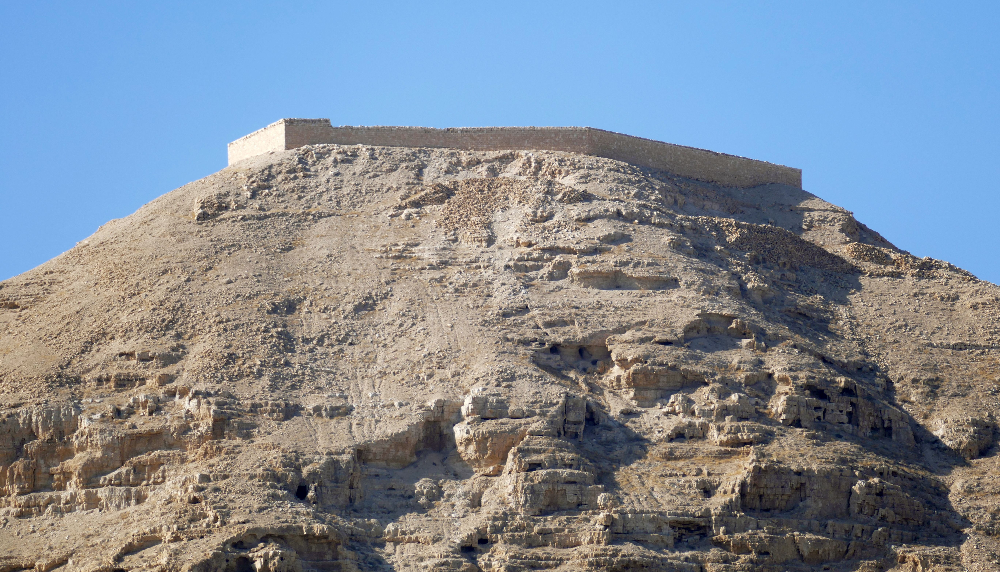

"Y los muros cayeron." Es la imagen más famosa de la conquista bíblica. Pero cuando los arqueólogos excavaron Jericó, encontraron un problema que se mide en siglos.
El libro de Josué narra una conquista fulminante: el pueblo de Israel entra en Canaán y, ciudad tras ciudad, la somete. La primera y más célebre es Jericó, cuyas murallas se derrumban tras siete días de marchas y el sonido de las trompetas. Es una de las escenas más recordadas de la Biblia. Y es, también, uno de los casos donde la arqueología ha hablado con más claridad —y donde su respuesta abre un problema fascinante—.
Jericó —el yacimiento de Tell es-Sultan— es uno de los lugares habitados más antiguos del mundo, con más de diez mil años de historia. Ha sido excavada repetidamente, sobre todo por la arqueóloga británica Kathleen Kenyon en los años 50, con métodos que en su día fueron pioneros. Si en algún sitio podíamos esperar encontrar la huella de la conquista, era aquí.

Kenyon encontró, en efecto, murallas derrumbadas y una destrucción violenta con incendio. El detalle es que esa gran destrucción ocurrió hacia el 1550 a.C., al final de la Edad del Bronce Medio. Y la fecha en que el relato bíblico sitúa la conquista es muy posterior: entre el 1400 y el 1230 a.C., según cómo se calcule. Es decir, cuando "deberían" caer las murallas ante Josué, Jericó llevaba siglos en ruinas: en esa época era, según las excavaciones, un lugar casi deshabitado, sin murallas que derribar.
Ese desfase de siglos es el corazón del episodio. Y como es, ante todo, una cuestión de tiempo, la mejor manera de verlo es sobre una línea temporal. Sigue el eje: verás la ocupación real de la ciudad y el momento en que el relato coloca la conquista.
Dos cosas que deberían coincidir —la caída de las murallas y la llegada de Josué— quedan separadas por siglos. Desplázate para verlo.
En cualquiera de las dos fechas posibles para la conquista, la gran Jericó amurallada ya había sido destruida siglos antes. No había murallas que derribar: el momento del relato y el de la ciudad real no coinciden.
Jericó fue una gran ciudad amurallada, sí, pero fue destruida hacia el 1550 a.C. Cuando la Biblia sitúa la conquista de Josué (siglos después), la ciudad ya llevaba mucho tiempo en ruinas. Las murallas famosas habían caído antes de que Josué pudiera llegar.
Con rigor, hay que decir que existe una posición minoritaria. El arqueólogo Bryant Wood propuso, en los años 90, redatar la destrucción de Jericó al 1400 a.C. —lo que la haría coincidir con la fecha "alta" de la conquista—, reinterpretando la cerámica hallada por Kenyon. Su propuesta ha tenido eco en círculos que defienden la historicidad del relato.
Sin embargo, la gran mayoría de los especialistas no la acepta. La datación de Kenyon ha sido respaldada por análisis posteriores, incluida la datación por radiocarbono, que confirma la destrucción en el Bronce Medio, no en el Bronce Tardío. La revisión de Wood se considera forzada: intenta hacer encajar la evidencia con una fecha predeterminada, en lugar de seguir la evidencia allí donde lleva. El debate existe, pero está muy desequilibrado.
Bryant Wood propone que la destrucción fue hacia 1400 a.C., coincidiendo con la conquista. Reinterpreta la cerámica de Kenyon para cerrar el desfase.
La destrucción es del Bronce Medio (~1550 a.C.), confirmada por estratigrafía y radiocarbono. En la fecha de la conquista, Jericó estaba en ruinas. No hubo tal caída de murallas.
Jericó no es un caso aislado. Cuando se contrastan las demás ciudades que, según Josué, fueron conquistadas y destruidas, el patrón se repite: muchas no estaban habitadas en la época de la conquista (como Hai, otro caso célebre), o no muestran señales de destrucción en la fecha correspondiente, o fueron destruidas en momentos muy distintos entre sí. La imagen de una campaña militar única y rápida, ciudad tras ciudad, no encaja con lo que revela el suelo.
Esto no significa que no ocurriera nada, sino que la conquista relámpago tal como la narra Josué no es lo que muestra la arqueología. Y prepara la respuesta del último episodio: si Israel no entró arrasando desde fuera, ¿de dónde salió? La pista está en las montañas de Canaán.
Lectura: que la gran destrucción de Jericó es del Bronce Medio (~1550 a.C.), siglos antes de cualquier fecha de la conquista, es consenso arqueológico firme (Kenyon, confirmado por radiocarbono). La redatación de Wood es minoritaria. Que la conquista relámpago de Josué no encaja con la arqueología es ampliamente aceptado.
Las excavaciones de Kathleen Kenyon en Jericó (1952–1958) dataron la última gran ciudad amurallada y su destrucción hacia el final del Bronce Medio (~1550 a.C.). Su cronología ha sido respaldada por dataciones de radiocarbono posteriores (por ejemplo, los trabajos de Bruins y van der Plicht).
La propuesta de redatación al 1400 a.C. es de Bryant Wood (Biblical Archaeology Review, 1990) y es defendida sobre todo en ámbitos confesionales; la mayoría de los especialistas la rechaza por no ajustarse a la evidencia cerámica y radiocarbónica. Se expone con neutralidad como posición minoritaria existente.
El cuadro general de la conquista (contraste entre Josué y la arqueología de ciudades como Hai, Hazor o Jericó) sigue a Finkelstein y Silberman, The Bible Unearthed. La entrega distingue el dato arqueológico del valor religioso del relato, que no depende de su literalidad.